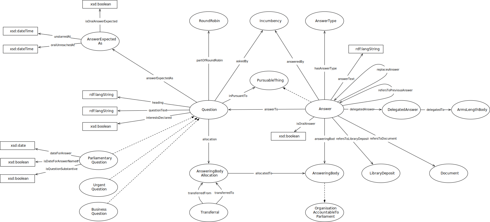

IRI: http://parliament.uk/ontologies/question-and-answer/Answer
IRI: http://parliament.uk/ontologies/question-and-answer/AnswerExpectedAsChange
IRI: http://parliament.uk/ontologies/question-and-answer/AnswerExpectedAsChangeReason
IRI: http://parliament.uk/ontologies/question-and-answer/AnswerExpectedWithForm
IRI: http://parliament.uk/ontologies/question-and-answer/AnswerType
IRI: http://parliament.uk/ontologies/question-and-answer/AnsweringBody
IRI: http://parliament.uk/ontologies/question-and-answer/AnsweringBodyAllocation
IRI: http://parliament.uk/ontologies/question-and-answer/BusinessQuestion
IRI: http://parliament.uk/ontologies/question-and-answer/DelegatedAnswer
IRI: http://parliament.uk/ontologies/question-and-answer/DelegatedAnswerBody
IRI: http://parliament.uk/ontologies/question-and-answer/Document
IRI: http://parliament.uk/ontologies/question-and-answer/FormOfAnswer
IRI: http://parliament.uk/ontologies/question-and-answer/Incumbency
IRI: http://parliament.uk/ontologies/question-and-answer/LibraryDeposit
IRI: http://parliament.uk/ontologies/question-and-answer/OrganisationAccountableToParliament
IRI: http://parliament.uk/ontologies/question-and-answer/ParliamentaryQuestion
IRI: http://parliament.uk/ontologies/question-and-answer/PursuableThing
IRI: http://parliament.uk/ontologies/question-and-answer/Question
IRI: http://parliament.uk/ontologies/question-and-answer/Transferral
IRI: http://parliament.uk/ontologies/question-and-answer/UrgentQuestion
IRI: http://parliament.uk/ontologies/question-and-answer/allocatedTo
IRI: http://parliament.uk/ontologies/question-and-answer/allocation
IRI: http://parliament.uk/ontologies/question-and-answer/answerExpectedAs
IRI: http://parliament.uk/ontologies/question-and-answer/answerTo
IRI: http://parliament.uk/ontologies/question-and-answer/answeredBy
IRI: http://parliament.uk/ontologies/question-and-answer/askedBy
IRI: http://parliament.uk/ontologies/question-and-answer/attachedTo
IRI: http://parliament.uk/ontologies/question-and-answer/changedFrom
IRI: http://parliament.uk/ontologies/question-and-answer/changedTo
IRI: http://parliament.uk/ontologies/question-and-answer/delegatedTo
IRI: http://parliament.uk/ontologies/question-and-answer/endsAllocation
IRI: http://parliament.uk/ontologies/question-and-answer/fromAnsweringBody
IRI: http://parliament.uk/ontologies/question-and-answer/hasAnswerType
IRI: http://parliament.uk/ontologies/question-and-answer/hasChangeReason
IRI: http://parliament.uk/ontologies/question-and-answer/hasFormOfAnswer
IRI: http://parliament.uk/ontologies/question-and-answer/pursuantTo
IRI: http://parliament.uk/ontologies/question-and-answer/refersToLibraryDeposit
IRI: http://parliament.uk/ontologies/question-and-answer/refersToPreviousAnswer
IRI: http://parliament.uk/ontologies/question-and-answer/replacesAnswer
IRI: http://parliament.uk/ontologies/question-and-answer/startsAllocation
IRI: http://parliament.uk/ontologies/question-and-answer/answerText
IRI: http://parliament.uk/ontologies/question-and-answer/dateForAnswer
IRI: http://parliament.uk/ontologies/question-and-answer/headingText
IRI: http://parliament.uk/ontologies/question-and-answer/isAnswerOral
IRI: http://parliament.uk/ontologies/question-and-answer/isDateForAnswerNamed
IRI: http://parliament.uk/ontologies/question-and-answer/isInterestDeclared
IRI: http://parliament.uk/ontologies/question-and-answer/isQuestionSubstantive
IRI: http://parliament.uk/ontologies/question-and-answer/questionText
This HTML document was obtained by processing the OWL ontology source code through LODE, Live OWL Documentation Environment, developed by Silvio Peroni.